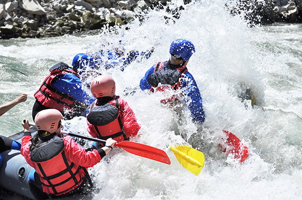
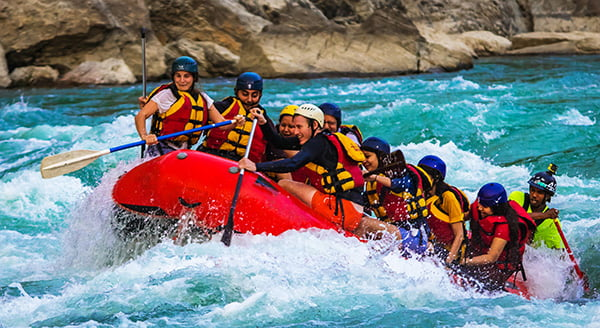
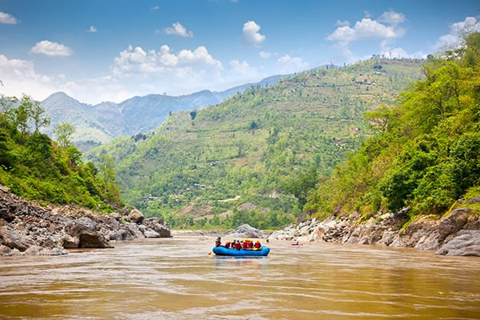

Passeios nas Corredeiras

A Corredeira Águas Agitadas é um dos trechos mais emocionantes e desafiadores do percurso de rafting, ideal para quem busca adrenalina em meio à natureza selvagem. Localizada em uma região de rio com forte desnível e fluxo intenso, essa corredeira combina velocidade, turbulência e paisagens impressionantes que tornam a experiência inesquecível. Logo no início do trajeto, a correnteza ganha força e o rio se estreita entre formações rochosas antigas, criando ondas imprevisíveis e redemoinhos constantes. A água, de um tom esverdeado profundo, se agita violentamente ao colidir com pedras submersas, exigindo atenção total da equipe e respostas rápidas aos comandos do instrutor. Durante a descida, o nível de emoção aumenta progressivamente. Em alguns pontos, o bote parece “desaparecer” entre as ondas, sendo levantado e sacudido pela força da água, enquanto em outros momentos há pequenas pausas que dão apenas alguns segundos de respiro antes do próximo impacto. É um trecho onde trabalho em equipe faz toda a diferença, já que a sincronia das remadas ajuda a manter o controle e a direção.

A Aventura Oásis é um passeio em corredeira que combina perfeitamente emoção e contemplação, criando uma experiência única para quem busca adrenalina sem abrir mão de momentos de tranquilidade em meio à natureza. O trajeto começa de forma suave, com o rio deslizando por um trecho mais calmo, cercado por vegetação exuberante. As águas cristalinas refletem o céu e as copas das árvores, criando um cenário quase paradisíaco — o verdadeiro “oásis” que dá nome ao passeio. É nesse início que os participantes podem se familiarizar com os ritmo das remadas. À medida que o percurso avança, o cenário se transforma gradualmente. O rio começa a ganhar força, e pequenas ondulações surgem, anunciando a chegada das primeiras corredeiras. Diferente de trechos extremamente agressivos, aqui o desafio é progressivo e equilibrado, ideal tanto para iniciantes quanto para aventureiros que querem curtir a jornada com mais leveza. Durante o percurso, os participantes são divididos em equipes e guiados por instrutores especializados, que orientam todas as técnicas de remada e segurança.

A Corredeira Easy é o passeio ideal para quem deseja conhecer o rafting de forma leve, divertida e segura. Pensada especialmente para iniciantes, famílias e pessoas que querem experimentar a sensação de descer um rio em corredeiras sem enfrentar grandes níveis de dificuldade, essa experiência combina aventura moderada com muito contato com a natureza. O percurso começa em um trecho calmo do rio, onde os participantes recebem orientações básicas dos guias e têm a oportunidade de se familiarizar com o bote e os equipamentos. A água é tranquila, permitindo remar com calma enquanto se aprecia a paisagem ao redor — geralmente composta por sons de pássaros e um clima relaxante. À medida que o passeio avança, surgem pequenas corredeiras de baixa intensidade, com ondas suaves e fluxo controlado. Essas passagens são perfeitas para gerar emoção sem causar medo, proporcionando aquela sensação divertida de subir e descer nas ondulações da água. O nível de dificuldade é leve, tornando a atividade acessível até para quem nunca teve contato com esportes de aventura.
Guia de Passeios
| Passeio | Duração | Nível | Preço (Por Pessoa) |
|---|---|---|---|
| Corredeira Águas Agitadas | 2h | Difícil | R$ 300 |
| Aventura Oásis | 1h45 | Médio | R$ 250 |
| Corredeira Easy | 1h30 | Fácil | R$ 230 |
| Aventura Suprise | 2h | Médio | R$ 280 |